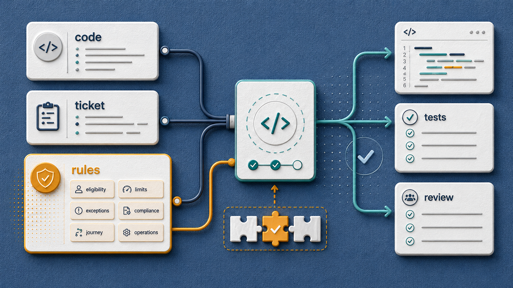
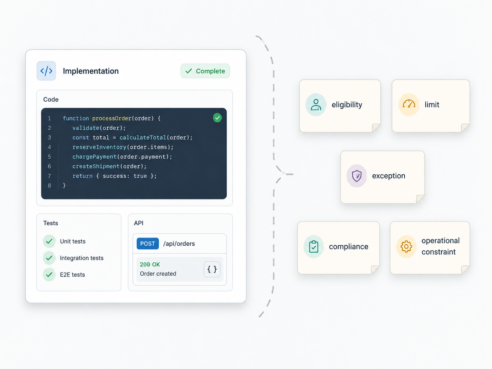
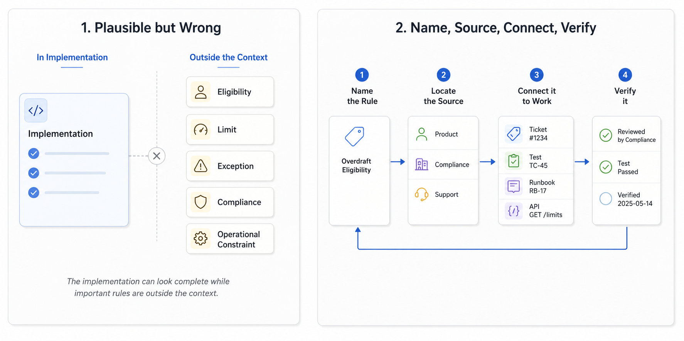

A team asks an AI coding assistant to add refund preview support to an internal billing service.
The ticket looks simple: show the customer how much they would receive before they confirm a refund. The existing code has a normal refund path. The tests cover successful refunds, invalid payment IDs, and a downstream provider failure.
The assistant follows the visible system. It finds the refund service, extracts the calculation, adds a preview endpoint, writes a few tests, and returns a clean summary.
The implementation looks reasonable.
Then review starts.
Enterprise customers follow contract-specific refund rules. Customers in one region require a tax adjustment. Support can approve exceptions, but only when a case ID exists. Refunds above a threshold require manual review. Some old plans calculate credits differently. Compliance requires an audit event even for previews.
None of that was in the ticket.
Some of it was in old product discussions. Some lived in support workflows. Some was buried in previous incidents. Some existed only because a senior engineer remembered the last time refunds broke.
The assistant did not fail because it could not write code.
It failed because the business rules were missing from context.
That is the missing layer in a lot of AI-assisted development.
Code files show how the system currently behaves. Tickets describe what someone wants changed. Business rules explain what correct means: what the system is allowed to do, when, for whom, under which limits, and with which exceptions.
If those rules do not reach the work, AI assistants will make plausible assumptions.

Sometimes those assumptions will be wrong.
What business rules mean in software work
Business rules are the product, domain, policy, and operational rules that shape correct behavior.
They are not limited to "business" in the commercial sense. They include anything outside pure technical structure that decides whether the system should accept, reject, route, limit, transform, log, delay, or escalate something.
In software teams, business rules often look like:
- eligibility: who can use a feature
- limits: how much, how often, how many, how long
- validations: what must be true before an action is allowed
- exceptions: enterprise contracts, support overrides, migration states, legacy plans
- compliance rules: consent, audit logging, retention, data residency
- customer journeys: trial, onboarding, upgrade, cancellation, renewal, dispute
- operational constraints: manual review queues, rollout windows, downstream limits, support handoff
These rules often come from product decisions, customer contracts, regulation, support processes, incidents, sales commitments, finance policies, and operational experience.
They may be visible in code. But code alone is often a poor source of truth.
The code may contain old behavior that remains only for migration. It may include exceptions without explaining why they exist. It may show the current calculation but not the product rule behind it. It may have tests for the common path but not for the customer segment that matters most.
AI can infer patterns from code, but inference is not the same as knowing the rule.
Why tickets are not enough
Teams often treat the ticket as the source of truth for AI-assisted work.
That is understandable. The ticket is close to the task. It usually says what needs to change. It may include acceptance criteria and a few examples.
But many tickets are thin.
"Add refund preview" sounds clear until you ask:
- Which customers are eligible?
- Which plans behave differently?
- What limits apply?
- What requires manual review?
- What must be logged?
- Which regions have different rules?
- Which old states still exist in production?
- Which downstream service constraints matter?
Human developers often fill these gaps socially. They ask product. They ping support. They remember a previous incident. They look at old pull requests. They wait for a reviewer to catch the missing exception.
AI assistants do not get that social layer by default. They work from the prompt, selected files, tickets, retrieved docs, tests, repository instructions, terminal output, and connected tools.
If the business rule is not there, the assistant may continue the visible pattern and produce a clean wrong answer.
DORA's guidance on AI-accessible internal data points to the practical need for relevant internal context such as codebases, documentation, style guides, architecture diagrams, and operational information. For software delivery, business rules belong in that context set. Without them, the assistant has technical context but not enough domain context.
Plausible but wrong
Missing business rules usually do not create obviously broken output.
They create plausible output.
That is what makes the problem dangerous.
The generated code compiles. The tests pass. The naming fits the service. The summary says the assistant added refund preview support. The change may even work for the normal customer path.

But it may be wrong for the business.
It may approve a customer who is not eligible. It may skip a limit. It may accept a state that should be blocked. It may apply the standard calculation to a contracted customer. It may forget an audit event. It may generate tests that prove only the happy path.
The assistant is not necessarily being careless. It is using the available evidence.
If the visible evidence says refunds are a calculation and a provider call, that is what the assistant will implement. If the visible tests do not include manual review thresholds, the generated tests may not include them either. If the ticket does not mention regional rules, the implementation may treat all customers the same.
This is where business rules differ from style rules.
A style rule can often be inferred from local code. A business rule often cannot.
The fact that the code uses RefundAmountCalculator tells the assistant where calculation lives. It does not tell the assistant that customers on a migrated plan follow a different policy until their renewal date.
Business rules should be first-class context
First-class context means the rule has a reliable path into the work.
It is not hidden only in memory. It is not trapped in a long product thread. It is not buried in an old ticket that nobody links. It is not only discovered when a senior reviewer joins the pull request.
For AI-assisted development, a useful business rule has a few qualities.
It is explicit enough to apply. "Handle enterprise customers" is weak. "Enterprise customers require contract-rule lookup before refund amount is calculated" is better.
It is close to the workflow. A rule that affects implementation should appear in acceptance criteria, examples, tests, domain docs, repository instructions, or linked product specs. A rule that affects operations should appear in runbooks, alerts, rollout notes, or support handoff.
It is current. Old rules should be marked as superseded or scoped to legacy behavior. If the old rule still applies to migrated accounts, say that.
It is testable or reviewable where possible. If a rule affects behavior, there should be examples, tests, contract cases, decision tables, or review prompts that make the rule visible.
It is owned. Someone should know who can change the rule and who should review changes that touch it.
DORA's work on documentation quality emphasizes clarity, findability, and reliability. Those qualities apply directly to business rules. A rule that cannot be found at the moment of implementation is not useful context.
Where business rules can live
There is no single correct artifact.
The right form depends on how the rule is used.
Some rules belong in task context. Acceptance criteria, product specs, ticket examples, and scenario notes help when a rule is specific to the current change. If refund preview must respect manual review thresholds, the ticket should say so.
Some rules belong in executable examples. Tests, contract cases, fixtures, sample payloads, and API examples are useful when the behavior is stable enough to verify. If enterprise customers require contract lookup, add a test that fails when the lookup is skipped.
Some rules belong in domain references. A short, current "refund rules" page linked from the billing service is better than rediscovering the same policy in every ticket. For rules with many combinations, a small decision table can be clearer than paragraphs of prose. Formal approaches such as Decision Model and Notation exist, but most teams can start with a readable table.
Some rules belong in operational context. Runbooks, support handoff notes, alert descriptions, rollout steps, and incident follow-ups are the right place for rules that affect manual review, escalation, recovery, or production handling.
Repository instructions can help connect these sources for AI tools. They should not become a dumping ground, but they can point assistants toward the right docs, tests, validation commands, and domain-specific risks.
The rule should live where it changes behavior.
A practical capture model
Use a simple model: name the rule, locate the source, connect it to work, and verify it.
Name the rule in plain language.
For example: "Refunds above $5,000 require manual review." Naming the rule makes it easier to discuss, search, test, and review.
Locate the source of authority.
Does the rule come from product policy, contract terms, compliance, finance, support, an incident, or an operational limit? If nobody knows where the rule comes from, treat that as a risk.
Connect the rule to the workflow.
Put it where the next change will see it: acceptance criteria, example table, test file, service README, domain doc, API contract, PR template, repository instruction, or runbook.
Verify the rule where practical.
Some rules should become tests. Some should become contract cases. Some should become validation logic. Some should become review checklist items. Some should become monitoring or audit checks. Not every rule can be automated, but important rules should not rely only on memory.
This model is intentionally small.
The goal is not a large requirements process. The goal is to stop important rules from disappearing between product intent and implementation.
What reviewers should ask
AI-assisted code review should include business-rule review.
Not as a separate ceremony. As part of normal engineering judgment.
When a generated change looks technically clean, reviewers should ask:
- Which business rules shaped this implementation?
- Are eligibility, limits, validations, and exceptions visible?
- Are compliance and audit requirements represented?
- Are customer journey states covered?
- Are operational constraints included?
- Do the tests cover rule boundaries, not only the happy path?
- Would a new developer or assistant find the same rules next time?
These questions help separate clean code from correct behavior.
AI can help draft the checklist, generate candidate tests, and compare code against visible rules. But humans still own the business meaning of the change.
That accountability matters.
Do not document everything
Capturing business rules as context does not mean every conversation becomes a formal document.
Some rules are temporary. Some are sensitive. Some are still being negotiated. Some require human judgment. Some should live in product systems, contract systems, compliance workflows, or support tools rather than directly in a code repository.
The practical question is narrower:
Which rules affect implementation, testing, review, rollout, compliance, customer behavior, or production support?
Those rules need a reliable path into engineering work.
Sometimes that path is a link. Sometimes it is a test. Sometimes it is an example table. Sometimes it is a repository instruction that points to the source of truth. Sometimes it is a review gate for a domain owner.
The answer is not maximum documentation.
The answer is reachable rules.
Three practical takeaways
First, treat business rules as implementation context. Code and tickets are not enough when correctness depends on eligibility, limits, validations, exceptions, compliance, customer journeys, or operational constraints.
Second, make missing rules visible during AI-assisted work. If an assistant makes a plausible assumption, ask which rule was absent from the prompt, ticket, tests, docs, or retrieved context.
Third, capture rules in the form that changes behavior. Use acceptance criteria, examples, tests, decision tables, API contracts, domain docs, runbooks, repository instructions, and review gates where they fit.
The missing layer
AI-assisted development makes a familiar problem harder to ignore.
Software correctness is not only a code problem.
It is also a rule problem.
The assistant can read the code and still miss who is eligible. It can read the ticket and still miss a limit. It can generate tests and still miss the exception. It can summarize the change and still miss the operational constraint.
That does not mean AI is useless.
It means the context is incomplete.
The next time an AI-assisted change looks clean, ask one more question before trusting it:
Which business rules did this change use?
If the answer is unclear, the team has found the missing layer.
Business rules must become first-class context for AI-assisted development.